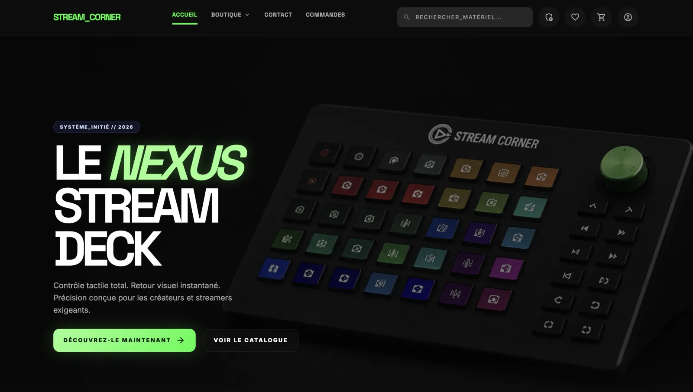

Arras, France
BTS SIO — OPTION SLAM
RAPHAËL COURSIER DÉVELOPPEUR WEB
Je construis des expériences web solides, avec une direction visuelle forte, une architecture claire et un code maintenable. Mon objectif : livrer des produits qui marquent et qui durent.
// craft_over_template = true;
Focus actuel : Architecture clean
HTML, CSS, JS, PHP
Ingénierie logicielle
ask://raphael
Bienvenue. Retrouvez mon profil, mes projets et mon parcours dans les sections de cette page.
Le terminal interactif nécessite JavaScript, mais tous les contenus essentiels restent accessibles.
Design
Identité visuelle lisible, mémorable.
Code
Base claire, évolutive, maintenable.
Delivery
Du cadrage au résultat concret.
Vision
Un portfolio qui affirme le niveau visé.
HTML
CSS
SQL
PYTHON
JAVASCRIPT
GIT
SYMFONY
PHP
BASH
02
À PROPOS
Étudiant en BTS SIO · option SLAM
Développeur junior orienté interfaces propres, logique métier et progression continue.
Actuellement en deuxième année de BTS SIO option SLAM (développeur) au lycée Guy Mollet d’Arras, j’ai pour projet de devenir ingénieur dans le développement web et la solution logicielle.
Déterminé et passionné par le développement, j’allie rigueur, curiosité et envie constante d’apprendre. J’explore chaque jour de nouvelles technologies web et affine ma compréhension algorithmique pour résoudre des problèmes réels. Mon objectif : progresser continuellement et devenir un développeur complet.
Âgé de 21 ans, j’ai pour ambition d’intégrer une école d’ingénieur. À l’issue de celle-ci, mon objectif est de créer mon entreprise dans le développement web et la solution logicielle.
Rigueur
Structure et cohérence technique.
Créativité
Direction artistique assumée.
Progression
Amélioration continue et itérations.
PARCOURS / 2023–2027
Expériences et formation
-
Stage de deuxième année
Stage recherché dans le cadre de ma deuxième année de BTS SIO.
-
Stage de première année
Habitat Insertion · Conception et développement de l'application métier Wheello.
Voir Wheello -
BTS SIO · Option SLAM
Lycée Guy Mollet · Arras.
-
L1 SID LAS
Sciences de l’information et du document · Licence Accès Santé · Université de Lille.
-
BTS Audiovisuel
Formation suivie à Saint-Quentin.
-
Baccalauréat · Mention assez bien
Lycée La Malassise · Longuenesse.
03 / SELECTED PROJECTS
MES PROJETS
01 / APPLICATION MÉTIER
WHEELLO
Piloter une flotte, les réservations et les usages terrain dans un même système.
Voir le projet
02 / EXPÉRIENCE CLIENT
JESSICA DEW
Une expérience photographique douce, éditoriale et menée jusqu’à la mise en production.
Voir le projet
03 / E-COMMERCE FULL-STACK
STREAMCORNER
Un parcours e-commerce complet, du catalogue au back-office.
Voir le projet
04 / PRODUIT OPEN SOURCE
REVALOOP
Transformer une prévisualisation en espace de décision partagé entre développeur et client.
Voir le projet01 / 04
WHEELLO / CLIENT SYSTEM
03
MES PROJETS
Client réel
Académique
Perso
Les 9 projets
- Wheello — application métier Symfony et Flutter livrée à Habitat Insertion.
- StreamCorner — boutique Symfony avec catalogue, panier, compte client et back-office.
- Revaloop — plateforme open source de recette et de validation client.
- Le Secret du Conservateur — escape game web académique autour de l'histoire de l'art.
- Jessica Dew — expérience photographique conçue, déployée et maintenue de bout en bout.
- Responsiver — laboratoire desktop local-first pour auditer et corriger le responsive.
- Chicken Louisiane Steakhouse — premier site académique d'intégration HTML et CSS.
- AetherCore — inspecteur de modèles 3D WebGL avec mesures et interactions optionnelles.
- La Citadelle Rouge — aventure Minecraft Bedrock automatisée par Redstone et blocs de commande.
{kind=link}
Ces liens restent utilisables sans JavaScript. L'expérience enrichie ajoute les filtres, galeries et études de cas détaillées.
04
SAVOIR-FAIRE
// COMPÉTENCES EN ACTION
Du besoin au produit.
Chaque capacité présentée ici est reliée à une décision technique, un livrable et un projet que l'on peut réellement examiner.
Terrain
Flutter
Échange
API + JWT
Métier
Symfony
Données
MySQL
Transformer une contrainte terrain en outil quotidien.
Une application métier doit faire disparaître la complexité sans effacer les règles qui sécurisent le travail.
- Besoin
- Centraliser une flotte, les réservations et les retours sans multiplier les fichiers ni les doubles saisies.
- Décision
- Séparer l'usage terrain sur mobile et l'administration web, reliés par une API sécurisée.
- Preuve
- Back-office Symfony, application Flutter, bilans, notifications et gestion complète du cycle véhicule.
SymfonyFlutterJWTDoctrine
Examiner Wheello
RôleConception full-stack
TRAVAILLONS
ENSEMBLE
Dans chaque réalisation, je vise la meilleure version
À la recherche d’un stage de deuxième année ; également ouvert aux projets web et aux collaborations.
contact@rfielbal.fr© Raphaël Coursier ·
Mentions légales